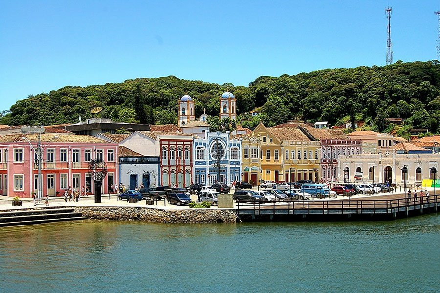
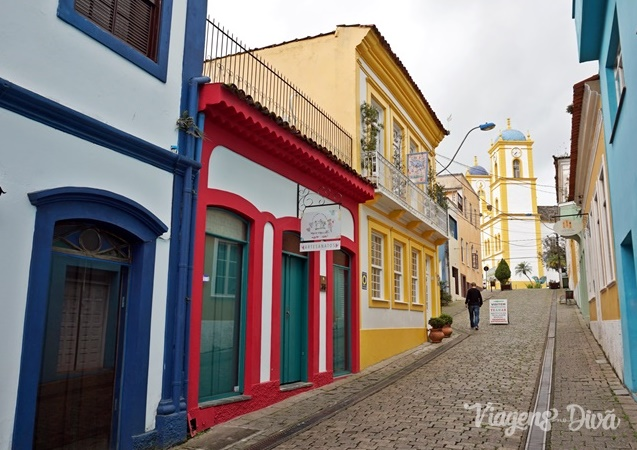

1ª parada (Ida)



De São Paulo a São Francisco do Sul são 588 km;
Tempo estimado de viagem 8 horas e 12 minutos;
Ao longo do percurso tem 10 pedágios, no total de R$ 30,70;
O gasto total com Gasolina, no valor de R$ 6,79, será de R$307,02;
O gasto total com Alcool, no valor de R$ 4,79, será 255,97;
É possível ir por estrada ou de balsa, sendo que por estrada é mais barato, porém mas demorado;
Ótimo lugar para fazer refeições de frutos do mar, pois é cidade de pesca;